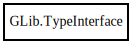

GLib.TypeInterface – gobject-2.0 Reference Manual
Packages
gobject-2.0
GLib
TypeInterface
add_prerequisite
get_plugin
get_type
peek_parent
TypeInterface
Object Hierarchy:

Description:
[
CCode
( free_function =
"g_type_default_interface_unref"
, lower_case_csuffix =
"type_interface"
) ]
[
Compact
]
public
class
TypeInterface
Namespace:
GLib
Package:
gobject-2.0
Content:
Methods:
public
void
add_prerequisite
()
public
weak
TypePlugin
get_plugin
(
Type
interface_type)
public
Type
get_type
()
public
unowned
TypeInterface
?
peek_parent
()